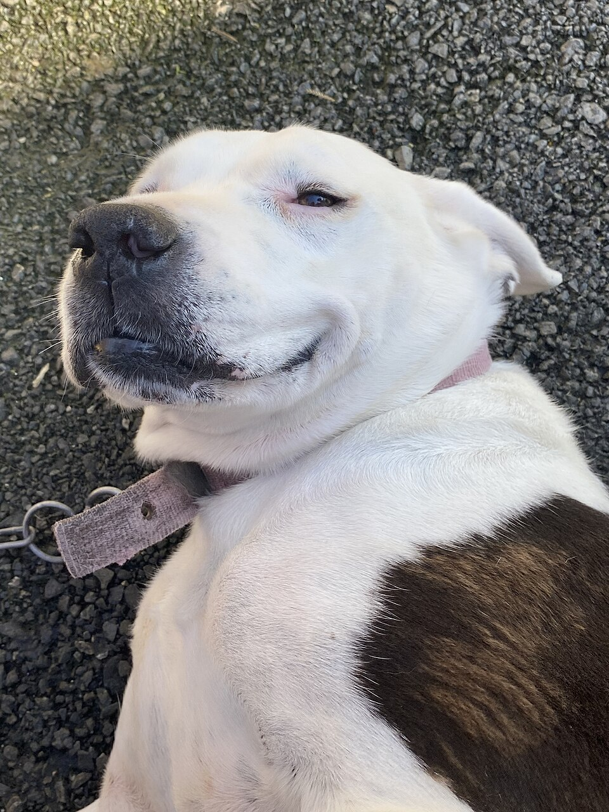

Adoption statt Kauf – warum Tierheimtiere die bessere Wahl sind
In deutschen Tierheimen warten rund 350.000 Tiere pro Jahr auf ein Zuhause. Ein Tier aus dem Tierschutz zu adoptieren, rettet Leben.

Auf einen Blick
- Tierheimtiere sind geimpft, kastriert, gechippt und tierärztlich untersucht.
- Die Schutzgebühr (50–350 Euro je nach Tierart) deckt einen Teil der Versorgungskosten, nicht den „Kaufpreis".
- Tierheime kennen ihre Schützlinge und beraten ehrlich – auch über Schwierigkeiten.
- Tiere aus der Zoohandlung stammen oft aus Massenzuchten mit schlechten Bedingungen.
Warum nicht aus der Zoohandlung?
Viele Tiere in Zoohandlungen stammen aus Zuchtbetrieben, in denen Stückzahl vor Gesundheit geht. Welpen und Kitten werden oft zu früh von der Mutter getrennt, Kleintiere in Massenhaltung produziert. Die Beratung im Zoohandel ist häufig unqualifiziert – weil der Verkauf im Vordergrund steht, nicht das Tierwohl.
Das Ergebnis: Spontankäufe, Tiere mit gesundheitlichen Problemen und überforderte Halter, die das Tier wenige Monate später ins Tierheim bringen. Der Kreislauf dreht sich weiter.
Warum auch der Züchter nicht die Antwort ist
„Dann kaufe ich eben beim seriösen Züchter" – das klingt nach einem Kompromiss. Aber solange jedes Jahr 350.000 Tiere in deutschen Tierheimen landen, ist jedes gezüchtete Tier eines zu viel. Jeder Wurf belegt einen Platz, den ein bestehendes Tier dringend braucht.
Und „seriös" ist dehnbar. Auch Züchter mit VDH-Papieren züchten Rassen, deren Rassestandards Leid verursachen: Brachyzephale Hunde, die nicht atmen können. Katzen mit Gendefekten, die ein Leben lang Schmerzen haben. Kaninchen mit Schlappohren, die chronische Entzündungen entwickeln. Der Rassestandard definiert, wie ein Tier aussehen soll – nicht, wie es sich fühlt.
Dazu kommt: Zucht ist ein Geschäft. Auch wenn einzelne Züchter ihre Tiere lieben – das System produziert Lebewesen für einen Markt. Und jeder Markt erzeugt Überschuss. Die Tiere, die nicht verkauft werden, die „nicht dem Standard entsprechen", die zurückkommen – sie landen am Ende oft genau da, wo bereits zu viele Tiere warten: im Tierheim.
Im Tierheim wartet dein Tier bereits
Tierheime und Tierschutzvereine haben Hunde, Katzen, Kaninchen, Vögel, Ratten, Meerschweinchen – in jedem Alter, jeder Größe, jedem Temperament. Viele sind bereits kastriert, geimpft und vom Charakter her eingeschätzt. Du weißt, was du bekommst. Beim Züchter kaufst du ein Versprechen. Im Tierheim lernst du ein Tier kennen.
Der Adoptionsprozess
Tierheime und Tierschutzorganisationen haben ein Vermittlungsverfahren, das auf den ersten Blick bürokratisch wirkt. Es ist keines. Es ist Fürsorge.
- Kontakt und Erstgespräch. Welches Tier passt zu deiner Lebenssituation? Ehrliche Beratung, keine Verkaufstaktik.
- Kennenlernen. Mehrere Besuche, um das Tier in Ruhe kennenzulernen.
- Fragebogen. Fragen zu Wohnsituation, Erfahrung, Tagesablauf, anderen Tieren im Haushalt.
- Vorkontrolle. Bei vielen Organisationen kommt jemand vorbei und schaut, ob die Haltungsbedingungen stimmen. Das ist Schutz für das Tier, nicht Misstrauen gegenüber dir.
- Schutzgebühr und Vertrag. Die Schutzgebühr deckt einen Teil der Kosten (Kastration, Impfung, Chip, tierärztliche Versorgung). Der Vertrag regelt Rückgaberecht und Nachkontrolle.
- Eingewöhnung und Nachbetreuung. Gute Organisationen bleiben ansprechbar, auch nach der Vermittlung.
Unseriöse Quellen erkennen
Finger weg bei diesen Warnsignalen
- Tiere werden per Kleinanzeige verkauft, ohne Impfpass, ohne Chip, ohne Vertrag
- Die Besichtigung der Elterntiere oder der Haltung wird verweigert
- Welpen/Kitten sind sichtbar zu jung (unter 8 Wochen)
- Mehrere Rassen werden gleichzeitig „angeboten"
- Auffallend günstige Preise für Rassehunde oder -katzen
- Übergabe auf Parkplätzen oder an der Autobahnraststätte
Illegaler Tierhandel ist ein Milliardengeschäft in Europa. Welpen aus osteuropäischen Vermehrerstationen werden unter schlimmsten Bedingungen transportiert und oft krank oder fehlsozialisiert verkauft. Wer billig kauft, finanziert Tierquälerei. Mehr zum Thema Qualzucht und warum die Nachfrage das Angebot steuert.
Der Preis-Decoder: Was kostet ein Welpe wirklich?
„400 Euro für einen Labrador-Welpen mit Papieren!" – klingt nach einem guten Deal? Rechnen wir mal durch, was ein seriös gezüchteter Welpe kostet – und warum Billigangebote immer auf Kosten des Tieres gehen:
| Posten | Seriöser Züchter | Vermehrer |
|---|---|---|
| Gesundheitsuntersuchung Elterntiere (HD, ED, Augen) | 300–800 € | Nicht gemacht |
| Deckgebühr / Zuchtmiete | 500–1.500 € | Eigene Dauerzucht |
| Tierärztliche Begleitung der Trächtigkeit | 200–500 € | Nicht gemacht |
| Hochwertiges Futter für Mutter + Welpen | 300–600 € | 50 € Billigfutter |
| Erstimpfungen + Chip + Wurmkuren (8 Wochen) | 150–250 € | Gefälscht oder nicht gemacht |
| Sozialisierung (Zeit, Spielzeug, Erfahrungen) | Hunderte Stunden | Käfighaltung |
| Vereinsgebühren, Zuchtbuchführung, Zuchtzulassung | 200–400 € | Keine Papiere (oder gefälscht) |
| Mindestkosten pro Welpe | 1.500–2.500 € | ~100 € |
Ein seriöser Züchter macht keinen Gewinn – er investiert in die Gesundheit und Zukunft seiner Welpen. Ein Vermehrer spart an allem, was das Tier braucht. Die Differenz zahlst du später: beim Tierarzt, beim Verhaltenstherapeuten, oder mit dem frühen Tod deines Tieres.
Die versteckten Kosten des „Schnäppchens"
Ein Welpe vom Vermehrer kostet im Schnitt 3–10× mehr als der Kaufpreis – in den ersten zwei Jahren:
- Parvovirose (häufig bei nicht geimpften Welpen): 2.000–5.000 € Behandlung, oft tödlich
- Hüftdysplasie (weil Elterntiere nicht getestet): 3.000–6.000 € pro OP
- Verhaltenstherapie (weil keine Sozialisierung): 1.500–3.000 €
- Chronische Erkrankungen (Inzucht, schlechte Gene): lebenslang 200–500 €/Jahr extra
Adopt, don't shop – und das gilt auch für den Züchter
Solange die Tierheime voll sind, ist jedes gezüchtete Tier eines zu viel. Auch bei einem „seriösen" Züchter mit Stammbaum. Dein Traumhund, deine Traumkatze – sie warten bereits. Im Tierheim, auf einer Pflegestelle, bei einer Tierschutzorganisation. Der einzige Unterschied: Sie haben keine Instagram-Welpenfotos. Dafür eine Geschichte und das Recht auf eine zweite Chance.